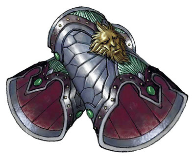

Objets magiques
Les objets magiques sont glanés dans le butin des monstres vaincus ou découverts dans des caveaux perdus depuis longtemps. Ces objets accordent des capacités qu'un personnage ne peut que rarement obtenir autrement, ou complètent les capacités de leur propriétaire d'une manière merveilleuse.
Rareté
Tout objet magique possède une rareté : commun, peu commun, rare, très rare ou légendaire. Les objets magiques communs, comme une potion de soins, sont les plus abondants. Certains objets légendaires, tels que le submersible de Kwalish, sont uniques. Le jeu suppose que les secrets de la création des objets les plus puissants sont apparus il y a des siècles puis ont été progressivement perdus à la suite de guerres, de cataclysmes et de mésaventures. Même les objets rares ne peuvent plus être facilement créés. Ainsi, de nombreux objets magiques sont maintenant des antiquités bien conservées.
La rareté fournit une mesure approximative de la puissance d'un objet par rapport à d'autres objets magiques. Chaque rareté correspond au niveau d'un personnage, comme indiqué dans la table ci-dessous. Par exemple, un personnage ne trouve généralement pas un objet magique rare avant le niveau 5. Ceci dit, la rareté ne devrait pas nuire à l'histoire de votre campagne. Si vous voulez qu'un anneau d'invisibilité tombe entre les mains d'un personnage de niveau 1, qu'il en soit ainsi. Une bonne histoire découlera surement de cet événement.

Si votre campagne permet le commerce d'objets magiques, la rareté peut également vous aider à fixer leur prix. En tant que MD, vous déterminez la valeur d'un objet magique individuel en fonction de sa rareté. Les valeurs suggérées sont fournies dans la table ci-dessous. La valeur d'un article consommable, comme une potion ou un parchemin, est généralement la moitié de la valeur d'un objet permanent de la même rareté.
| Rareté | Niveau du personnage | Valeur |
|---|---|---|
| Commun | 1 ou supérieur | 50 - 100 po |
| Peu commun | 1 ou supérieur | 101 - 500 po |
| Rare | 5 ou supérieur | 501 - 5 000 po |
| Très rare | 11 ou supérieur | 5 001 - 50 000 po |
| Légendaire | 17 ou supérieur | 50 001 po ou plus |
Acheter et vendre
À moins que vous ne décidiez que votre campagne fonctionne autrement, la plupart des objets magiques sont si rares qu'ils ne sont pas disponibles à l'achat. Les objets communs, comme les potions de soins, peuvent être obtenus auprès d'un alchimiste, d'un herboriste ou d'un lanceur de sorts. Ce faisant, cela n'est pas aussi simple que d'entrer dans un magasin et de sélectionner un article sur une étagère. Le vendeur pourrait demander en échange un service, plutôt que des pièces de monnaie.
Dans une grande ville avec une académie de magie ou un grand temple, l'achat et la vente d'objets magiques pourraient être possibles, à votre discrétion. Si votre monde comporte un grand nombre d'aventuriers engagés dans la récupération objets magiques antiques, le commerce de ces articles pourrait être plus commun. Mais même ainsi, cela reste similaire au marché des œuvres d'arts dans le monde réel, avec des ventes aux enchères sur invitation seulement, et une tendance à attirer les voleurs. La vente d'objets magiques est difficile dans la plupart des mondes D&D, principalement en raison du défi de trouver un acheteur.
Beaucoup de gens aimeraient posséder une épée magique, mais peu d'entre eux peuvent se le permettre. Et ceux qui peuvent se permettre un tel objet ont généralement des choses plus pratiques à acheter (voir le DMG pour gérer la vente d'objets magiques).
Dans votre campagne, les objets magiques peuvent être suffisamment répandus pour que les aventuriers puissent les acheter et les vendre avec un certain effort. Les objets magiques peuvent être vendus dans des bazars ou des ventes aux enchères situés dans des endroits fantastiques, comme la ville de Brass, la métropole planaire de Sigil ou même dans des villes plus ordinaires. La vente d'objets magiques pourrait être très réglementée, accompagnée d'un marché noir florissant. Les artisans pourraient fabriquer des objets pour les forces militaires ou les aventuriers, comme ils le font dans le monde d'Eberron. Vous pouvez également autoriser les personnages à créer leurs propres objets magiques (voir le DMG pour la fabrication d'objets magiques).
Identifier un objet magique
Certains objets magiques sont indiscernables de leurs homologues non-magiques, alors que d'autres objets magiques affichent clairement leur nature magique. Quel que soit l'aspect d'un objet magique, il suffit de manipuler l'objet pour donner à un personnage l'impression qu'il a dans les mains quelque chose d'extraordinaire. Cependant, la découverte des propriétés d'un objet magique n'est pas automatique.
Le sort identification est le moyen le plus rapide pour révéler les propriétés d'un objet. Alternativement, un personnage peut se concentrer sur un objet magique pendant un repos court, s'il est en contact physique avec l'objet. À la fin du repos, le personnage apprend les propriétés de l'objet, ainsi que la façon de les utiliser. Les potions sont une exception ; en goûter une suffit pour savoir ce qu'elle fait. Parfois, un objet magique donne un indice sur ses propriétés. Le mot de commande pour activer un anneau peut être gravé en petit à l'intérieur, ou des feuilles dessinées pourrait suggérer que c'est un anneau de feuille morte.
Porter un objet ou expérimenter peut également donner des pistes sur ses propriétés. Par exemple, si un personnage met un anneau de saut, vous pouvez dire : « Vos pas sont étrangement élastiques ». Le personnage sautera alors peut-être pour voir ce qui se passe. Dites-lui alors qu'il saute incroyablement haut.
Variante : Identification plus difficile
Si vous préférez que les objets magiques aient une dimension plus mystique, vous pouvez supprimer la possibilité d'identifier les propriétés d'un objet magique lors d'un repos court, et imposer que le sort identification, l'expérimentation, ou les deux, soient nécessaires pour révéler les propriétés d'un objet magique.
Lien
Certains objets magiques nécessitent qu'une créature se lie à eux pour que leurs propriétés magiques puissent être utilisées. On appelle cela se lier à l'objet, et certains objets ont une condition préalable pour cela. Si la condition est une classe, une créature doit être membre de cette classe pour pouvoir se lier à l'objet (si la classe est une classe de lanceur de sorts, un monstre peut se lier s'il possède des emplacements de sorts et utilise la liste de sorts de cette classe). Si la condition est d'être un lanceur de sorts, une créature peut se lier si elle peut lancer au moins un sort en utilisant ses traits ou ses capacités (mais pas en utilisant un objet magique ou autre chose similaire).
Une créature qui ne se lie pas à un objet qui nécessite un lien obtient uniquement les avantages non magiques de celui-ci, à moins que sa description n'indique le contraire. Par exemple, un bouclier magique qui exige un lien offre les avantages d'un bouclier normal à une créature non liée à lui, mais aucune de ses propriétés magiques.
Se lier à un objet nécessite que la créature passe un repos court concentré uniquement sur celui-ci tout en étant en contact physique avec lui (ce repos ne peut pas être le même repos court que celui utilisé pour apprendre les propriétés de l'objet). Cette focalisation peut prendre la forme d'un entrainement (pour une arme), d'une méditation (pour un objet merveilleux) ou de toute autre activité appropriée. Si le repos court est interrompu, la tentative de lien échoue. Sinon, à la fin de celui-ci, la créature acquiert une compréhension intuitive de la façon dont elle peut activer les propriétés magiques de l'objet, y compris les mots de commande nécessaires.
Un objet ne peut être lié qu'avec une seule créature à la fois et une créature ne peut être liée à plus de trois objets magiques à la fois. Toute tentative visant à se lier avec un quatrième objet échoue ; la créature doit auparavant rompre son lien avec un objet. En outre, une créature ne peut pas se lier à plus d'une copie d'un objet. Par exemple, une créature ne peut pas se lier à plus d'un anneau de protection à la fois.
Le lien d'une créature avec un objet se termine si la créature ne remplit plus les conditions requises pour cela, si l'objet se trouve plus de 30 mètres de distance durant plus de 24 heures, si la créature meurt, ou si une autre créature se lie avec l'objet. Une créature peut également mettre fin au lien volontairement en passant un autre repos court focalisé sur l'objet, à moins que celui-ci soit maudit.
Catégorie d'objet magique
Tout objet magique appartient à une catégorie : anneaux, armes, armures, baguettes, bâtons, objets merveilleux, parchemins, potions ou sceptres.
Anneaux
Les anneaux magiques offrent une gamme incroyable de pouvoirs aux chanceux qui en possèdent. Sauf indication contraire, un anneau doit être porté à un doigt, ou un appendice similaire, pour que la magie de l'anneau fonctionne.
Armes
Qu'elle ait été fabriquée dans un but précis ou forgée pour servir les idéaux de la chevalerie, les armes magiques sont convoitées par de nombreux aventuriers. Certaines armes magiques spécifient dans leur description à quel type d'arme elles correspondent, comme à une épée longue ou un arc long. Si une arme magique ne précise pas un type spécifique, vous pouvez choisir le type ou le déterminer au hasard. Si une arme magique possède la propriété munitions, les munitions qu'elle tire sont considérées comme magiques en ce qui concerne la résistance et l'immunité aux attaques et aux dégâts non magiques.
Armures
Sauf indication contraire, une armure doit être portée pour que sa magie fonctionne. Certaines armures magiques spécifient dans leur description à quel type d'armure elles correspondent, comme à une cotte de mailles ou un harnois. Si une armure magique ne précise pas un type spécifique, vous pouvez choisir le type ou le déterminer au hasard.
Baguettes
Une baguette magique fait entre 35 et 40 cm de long et est en métal, en os ou en bois. Ses extrémités sont en métal, en cristal, en pierre ou d'un autre matériau.
Bâtons
Un bâton magique mesure environ de 1,50 à 1,80 mètre de long. Leur apparence varie fortement : certains sont lisses et d'un diamètre égal sur toute leur longueur, d'autres sont noués et tordus, en bois ou composés de cristal ou de métal poli. Selon le matériau, un bâton pèse entre 1 et 3,5 kg. Sauf indication contraire, un bâton magique peut être utilisé comme un bâton (l'arme).
Objets merveilleux
Les objets merveilleux incluent les objets portés comme des bottes, des ceintures, des capes, des gants, ainsi que divers bijoux et objets de décoration comme des amulettes, des broches, et des serre-têtes. Sacs, tapis, boules de cristal, figurines, cornes, instruments de musique et autres objets entrent également dans cette catégorie fourre-tout.
Parchemins
La plupart des parchemins sont des sorts stockés sous forme écrite. Quelques-uns renferment des incantations uniques qui produisent de puissantes protections. Dans tous les cas, un parchemin est un rouleau de papier, parfois attaché à des tiges en bois, et généralement rangé dans un tube en ivoire, en jade, en cuir, en métal ou de bois. Un parchemin est un objet magique consommable. Quelle que soit la nature de la magie contenue dans le parchemin, relâcher sa magie demande que l'utilisateur lise le parchemin. Lorsque sa magie a été invoquée, le parchemin ne peut plus être utilisé de nouveau. Ses mots s'estompent ou le parchemin tombe en poussière.
Toute créature capable de comprendre une langue écrite peut lire le message arcanique sur un parchemin et tenter de l'activer.
Potions
Différents types de liquides magiques sont regroupés dans la catégorie des potions : breuvages fabriqués à partir d'herbes enchantées, eau de fontaines magiques ou des sources sacrées, huiles qu'on applique à une créature ou sur un objet. La plupart des potions correspondent à 10 cl de liquide.
Les potions sont des objets magiques consommables. Boire une potion ou en administrer une à un autre personnage nécessite une action. Appliquer une huile peut prendre plus de temps, comme cela est spécifié dans leur description. Une fois utilisée, une potion prend effet immédiatement. Elle est alors dépensée.
Sceptre
Un sceptre est généralement en métal, en bois ou en os. Il fait environ 60 à 90 cm de long pour 2,50 cm de diamètre, et pèse de 1 à 2,5 kg.
Porter et manier des objets
Utiliser les propriétés d'un objet magique signifie le porter ou le manier. Un objet magique destiné à être porté doit l'être de manière logique : les bottes vont sur les pieds, les gants sur les mains, les chapeaux et les casques sur la tête, et les anneaux sur les doigts. Une armure magique doit être enfilée, un bouclier attaché au bras, un manteau fixé sur les épaules. Une arme doit être tenue en main.
Dans la plupart des cas, un objet magique qui est destiné à être porté s'adapte à toute créature, indépendamment de sa taille ou de sa carrure. Beaucoup de vêtements magiques sont faits pour être facilement ajustés, ou s'adaptent magiquement au porteur. De rares exceptions existent. Si l'histoire suggère une bonne raison pour qu'un objet ne puisse s'adapter qu'à des créatures d'une certaine taille ou forme, vous pouvez décider que cela ne s'ajuste pas. Par exemple, une armure faite par les drows pourrait n'être portée que par des elfes. Ou des nains pourraient fabriquer des objets utilisables uniquement par des personnages ayant la taille et la carrure d'un nain.
Quand une créature qui n'est pas humanoïde tente de porter un objet, utilisez votre sens commun pour déterminer s'il fonctionne comme prévu. Un anneau placé sur un tentacule pourrait fonctionner, mais un yuan-ti avec une queue de serpent à la place des jambes ne peut pas porter de bottes.
Plusieurs objets du même type
Utilisez votre bon sens pour déterminer si plus d'un type donné d'objet magique peut être porté. Un personnage ne peut normalement pas porter plus d'une paire de chaussures, une paire de gants ou de gantelets, une paire de bracelets, une armure, un couvre chef et un manteau. Mais vous pouvez faire des exceptions ; un personnage pourrait par exemple être en mesure de porter un serre-tête sous un casque, ou être capable de superposer deux manteaux ou capes.
Paire d'objets
Les objets qui viennent par paire, comme les chaussures, les bracelets, les gantelets ou les gants, confèrent leurs avantages uniquement si la paire est portée. Par exemple, un personnage portant une botte de marche et de saut à un pied et une botte elfique sur l'autre n'obtient les avantages d'aucun des deux.
Activer un objet
L'activation de certains objets magiques nécessite que l'utilisateur entreprenne une action spéciale, comme le tenir ou prononcer un mot de commande. La description de chaque type d'objet ou d'un objet en particulier indique sa méthode d'activation. Certains objets utilisent une ou plusieurs des règles suivantes pour leur activation.
Si un objet exige une action pour être activé, celle-ci ne dépend pas de l'action Utiliser un objet, donc une capacité comme Mains lestes du roublard ne permet pas d'activer un objet.
Mot de commande
Un mot de commande est un mot ou une phrase qui doit être prononcé pour qu'un objet fonctionne. Un objet magique qui nécessite un mot de commande ne peut être activé dans une zone où il n'y a pas de son, comme dans la zone du sort silence.
Consommables
Certains objets sont consommés lorsqu'ils sont activés. Une potion ou un élixir doivent être avalés, ou une huile appliquée sur le corps. L'écriture disparaît d'un parchemin lorsqu'il est lu. Une fois utilisé, un objet consommable perd sa magie.
Sorts
Certains objets magiques permettent à l'utilisateur de lancer un sort depuis l'objet. Le sort est lancé au plus bas niveau de sort et de lanceur de sorts possibles, ne dépense pas d'emplacement de sort de l'utilisateur, et ne nécessite aucun composant, sauf si la description de l'objet spécifie le contraire. Le sort utilise son temps d'incantation, sa portée et sa durée normal, et l'utilisateur de l'objet doit se concentrer si le sort requiert de la concentration. De nombreux objets, comme les potions, permettent de contourner le lancement d'un sort tout en conférant les effets des sorts, avec leur durée habituelle. Certains objets font exceptions à ces règles, changent le temps d'incantation, la durée, ou d'autres parties d'un sort.
Un objet magique, comme certains bâtons, peut vous obliger à utiliser votre propre caractéristique de lanceur de sorts quand vous lancez un sort à partir de celui-ci. Si vous avez plus d'une caractéristique de lanceur de sorts, vous choisissez celle que vous utilisez avec l'objet. Si vous ne disposez pas de caractéristique de lanceur de sorts (peut-être êtes-vous un roublard avec la capacité Utilisation d'objets magiques), votre modificateur est de +0 pour l'objet, et votre bonus de maîtrise s'applique.
Charges
Certains objets magiques ont des charges qui doivent être dépensées pour activer leurs propriétés. Le nombre de charges restantes est révélé lorsque le sort identification est lancé sur l'objet, ou lorsqu'une créature lui est liée. En outre, quand un objet se recharge, la créature qui lui est liée sait combien de charges il a regagné.
Le Guide Farfelu de Sha-Ima (GFDSI)
Globe des fées
Peu commun, objet merveilleux, pas de lien
Quand vous secouer ce globe de cristal de quatre puce de diamètre qui contient une pixie endormie, elle ce réveille et pointe la fée la plus proche a un mille.
Livre de conte pour enfant sage
Légendaire, Objet merveilleux, lien (seulement avec une creature neutre ou mauvais)
Après avoir dit le mot de commende : Ho livre, livre des livres, dévoile mois une histoire Nommez ou décrivez une personne, un lieu ou un objet. Le livre écrit dans ces page des information sur cette chose (s'il échoue JDS SAG DD15 (seulement si créature vivante)) sous la forme d’un conte. Ce conte ne dévoile que quelque information et chaque contes tient dans une page. Si vous possédez la plume et l’encrier de l’écrivain vous gagnez le droits d’altérer les histoires, vous pouvez jeter injonction sur la cible de l’histoire, meme si vous n’avez pas le sort ou meme d’emplacement le sort as un DD 19. Le livre peut etre utiliser que trois foi par jour.
Le livre ne peut qu'être utiliser que 3 fois par nuit
Au choix du DM soit une histoire s'écris soit un sort de scrutation est lancer
Plume et encrier de l’écrivain
Très rare, Objet merveilleux, lien (seulement avec une creature neutre ou mauvaise)
Quand vous tenez cette plume et cette encrier dans vos main, vous pouvez légèrement modifier votre destin en le réécrivant. Quand vous modifier votre destin ce qui prend votre reaction vous pouvez modifier un jet de sauvegarde, un jet d’attaque ou un jet d’attaque a votre avantage, vous pouvez decider qu’il réussiras ou échoueras.
elle possede deux charge par jour
La masse de répartie
Arme (masse d’arme), légendaire (nécessite un lien avec une créature Loyale Bonne)
Dans le monde de Chenillama, un saint homme as mis dans le manche de cette masse le radius de saint Iyans, depuis cette arme apporte la lumière la ou elle passe.
Vous gagnez un bonus de +3 à l'attaque et aux jets de dégâts effectués avec cette masse d’arme. De plus, tant que vous tenez cette masse d’arme, vous pouvez utiliser votre réaction pour effectuer une attaque au corps à corps avec elle contre n'importe quelle créature à votre portée qui vous inflige des dégâts. Vous avez un avantage aux jets d'attaque, et tout jet de dégâts infligé via cette attaque spéciale ignore l'immunité et les resistance aux dégâts que la cible pourrait avoir.
Cape du non vue
Objet merveilleux, légendaire (nécessite un lien)
Tant que vous êtes équipé de cape, vous pouvez rabattre sa capuche sur votre tête ce qui a pour effet de vous rendre invisible. Tant que vous êtes invisible, tout ce que vous portez ou transportez est également invisible. Vous redevenez visible lorsque vous retirez votre capuche. Mettre ou enlever la capuche nécessite une action.
La cape peut vous rendre invisible pour 30 min elle regagne 5 min à chaque heure.
Petit bol de soupe de jean Paul
Objet merveilleux, commun
Toute eau fraîche versée dans ce bol devient immédiatement de la soupe. La soupe est de la soupe au poulet.
Anneau lapin
Bague, très rare, lien (avec une creature qui aime les lapins)
Un petit anneau blanc avec un cristal rose incrusté dedans confère un bonus de mouvement de +5 pieds et donne +3 au jets de sauvegarde de dextérité et donne l’avantage au jets de sauvegarde de dex
Malédiction : Si le PJ prend un repos court ou long avec cet anneau équipé, il doit faire un jet de sauvegarde de Constitution DD 11, en cas de succès rien ne se passe. Si le PJ échoue au jet de sauvegarde, il se fait pousser des oreilles et une queue de lapin et trouve désormais les carottes irrésistibles. La suppression de l'anneau ne supprime pas la malédiction mais supprime les bonus, la malédiction peut être supprimée de l'anneau avec le sort délivré ce des malediction mais la queue et les oreilles du lapin (ainsi que le désir de carottes) resteront jusqu'à ce qu'une restauration partielle soit lancée sur le PJ. Une fois la malédiction retirée de l’anneau et du PJ, le PJ peut ce lier à l'anneau afin de pouvoir à nouveau récupérer la queue et les oreilles ou les retirer à volonté au prix d'une action.
Cuirasse bikini
Armure (cuirasse), rare, pas de lien
Cette cuirrassse +2 qui ressemble a un petit bikini est tres léger et n’impose pas de désavantage au jets de discrétion aussi la cuirasse ne prend que 6 seconde a enlever.
La cape de reget
Objet merveilleux,peut commun, pas de lien
Quand vous porter cette épaisse cape brune vous dégager un aura a 20 pied de vus qui fait que les gens vous trouve désagréable.
Familier confortable
Objet merveilleux, rare, nécessite un lien avec un jetteur de sort qui as dans sa liste appel de familier.
Quand vous jeter appel de familier un espace de t’as informé ressemblent a un insecte juteux et moelleux apparais, cette creature est votre familier et suis les contrainte du sort, cependant votre familier as les statistique d’un loup sanguinaire de taille tres petite.